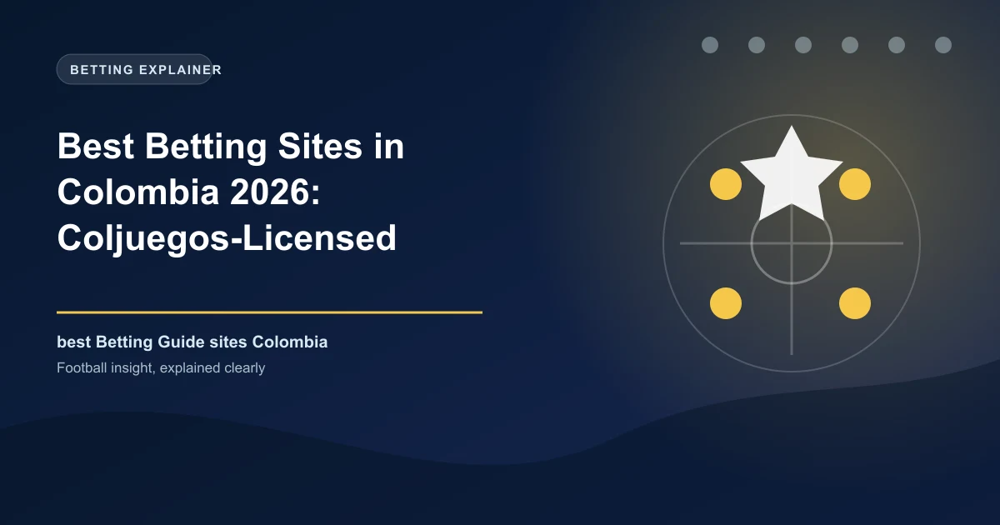

Best Betting Sites in Colombia 2026: Coljuegos-Licensed Bookmakers Ranked

Colombia became the first Latin American country to regulate online betting in 2017, and its Coljuegos licensing system is now the cleanest test of a bookmaker's legitimacy in the region. Here are the licensed operators we rate highest in 2026.

Colombia did something in 2017 that most of Latin America had not: it legalised and regulated online sports betting, with a single state regulator, a fixed list of licensed operators and mandatory local payment methods. The result is a market that is easy to navigate, because the first test is binary — the operator either holds a Coljuegos concession or it does not.
Every licensed Colombian bookmaker must run a .co domain, display its Coljuegos concession contract number in the footer, and be registered in Colombia with a NIT. There are currently around 14 authorised operators. Anything else — including international brands serving Colombian punters from Curacao or Malta without a Coljuegos contract — is outside the regulated system, and with it goes your easiest route to dispute resolution.
This guide ranks the best licensed betting sites in Colombia for 2026 on odds, local payments, welcome value and payout speed, with the Liga BetPlay front and centre.
Colombia Betting at a Glance
| Factor | Detail |
|---|---|
| Currency | Colombian peso (COP) |
| Regulator | Coljuegos (Ley 1753 de 2015; internet betting regulated by Acuerdo 08 de 2020) |
| Legal status | Legal only through Coljuegos concession holders (around 14 operators) |
| Minimum age | 18 |
| Tax on winnings | 20% retention on gains above 48 UVT (~COP 2.39 million in 2026); 19% IVA applies on deposits |
| Payment methods | PSE, Nequi, Daviplata, Efecty, Visa/Mastercard, Astropay |
| Most popular sports | Liga BetPlay, Selección Colombia, Copa Libertadores, NBA, MLB, tennis, esports |
Know the Rules: Coljuegos Licences and the 50% Rule
Coljuegos publishes the full register of authorised operators on its portal. A legitimate site must show its contract number (formato tipo C1876) in the footer, use a .co domain, and name its Colombian operating company with a NIT. Winnings above 48 UVT (roughly COP 2.39 million in 2026) are subject to a 20% ganancia ocasional retention that licensed operators apply automatically, and since February 2025 a 19% IVA applies on deposits at every Coljuegos operator.
There is also a lesser-known rule that shapes how you play: under Acuerdo 08, you must stake at least 50% of your deposits before you can withdraw. Budget it into your bankroll and always confirm the terms at your chosen operator.
How We Ranked the Sites
We tested the main Coljuegos-licensed operators in 2026, scoring licence verification, Colombian football depth and odds, welcome-offer value after reading wagering terms, support for PSE, Nequi, Daviplata and Efecty, and real withdrawal times. Bonus size was never ranked ahead of payment reliability.
The Best Betting Sites in Colombia, Ranked
1. BetPlay — Best Overall
BetPlay is Colombia's default bookmaker and the name behind the league itself. Operated by Corredor Empresarial S.A. (concession C1876, valid to 2027) and official sponsor of the Selección Colombia and the Liga BetPlay, it dominates with over 50% of the market. It covers Colombian football deeper than any rival, with Nequi, PSE and BancoLombardía button deposits, and its tested withdrawal time is a solid 24-48 hours.
- Licence: Coljuegos C1876 (Corredor Empresarial S.A.)
- Minimum deposit: COP 10,000
- Payments: Nequi, PSE, Bancolombia, cards
- Strengths: deepest Liga BetPlay coverage, official Selección sponsor, polished app
2. Wplay — Most Reliable Payouts
Wplay was the first bookmaker to obtain a Coljuegos licence back in 2017, and operator Aquila Global Group S.A.S. (concession C2182, valid to 2030) still runs the country's biggest physical network with 7,000+ recharge points. It is known for the fastest payouts in the market, a rare no-deposit bonus of COP 108,000, and the trademark Salva tu apuesta 0-0 promotion.
- Licence: Coljuegos C2182 (Aquila Global Group S.A.S.)
- Minimum deposit: COP 10,000
- Strengths: fastest withdrawals, no-deposit bonus, 7,000+ retail points
- Watch out for: one withdrawal per day; app reviews are mixed
3. Betsson Colombia — Best International Odds
Swedish group Betsson operates via Colbet S.A.S. (concession C1895) and is the official partner of Atlético Nacional. It marries international odds quality with seven local payment methods including PSE, Nequi, Daviplata and Efecty, plus live streaming across a strong football and tennis menu.
- Licence: Coljuegos C1895 (Colbet S.A.S.)
- Strengths: competitive margins, live streaming, broad local payments
4. Zamba — Most Flexible Payouts
Zamba (E Total Gaming S.A.S., concession C1894) stands out for its physical reach: winnings can be collected in cash at VICCA points with a minimum payout of just COP 100, alongside instant top-ups and a 100% welcome match up to COP 50,000. It is a strong option for bettors who want an in-person payout path in addition to online withdrawals.
- Licence: Coljuegos C1894 (E Total Gaming S.A.S.)
- Strengths: instant in-person cash payouts, low withdrawal floor
5. RushBet — Best Promo Programme
RushBet, operated by Rush Street Interactive (concession C1972), brings a mature US-built sportsbook platform with RushPay fast withdrawals, a generous and active promotions calendar on Colombian football, and a clean app experience on both platforms.
- Licence: Coljuegos C1972 (Rush Street Interactive Colombia S.A.S.)
- Strengths: strong promo programme, fast RushPay payouts, solid app
6. Codere Colombia — Best Retail Presence
Spain's Codere operates locally through Online Colombia S.A.S. (concession C1901) with more than 400 physical stores across the country. Its online product matches that retail footprint, offering boosted football odds, in-play depth, and Nequi, Daviplata and PSE deposits.
- Licence: Coljuegos C1901 (Online Colombia S.A.S.)
- Strengths: massive retail network, boosted football odds
7. Betfair Colombia — Best for Exchange Traders
Betfair operates in Colombia via Stake Colombia S.A.S. (concession C1751), giving Colombian punters access to a genuine betting exchange product alongside a standard sportsbook — ideal for back-and-lay traders who want to lay football odds rather than just back them.
- Licence: Coljuegos C1751 (Stake Colombia S.A.S.)
- Strengths: exchange trading, deep football markets
8. Bwin Colombia — Best Live In-Play
Bwin (Bwin Latam S.A.S., concession C1747) is a global Entain brand with deep live in-play markets, particularly across European football and tennis, plus the familiar Bwin multi-bet builder and solid PSE/Nequi integration.
- Licence: Coljuegos C1747 (Bwin Latam S.A.S.)
- Strengths: deep live markets, bet builder
Quick Comparison: What to Choose
| If You Want... | Top Choice | Runner-Up |
|---|---|---|
| Best overall | BetPlay | Wplay |
| Fastest payouts | Wplay | RushBet (RushPay) |
| Colombian football coverage | BetPlay | Wplay / Codere |
| Cash in-person payouts | Zamba | Wplay (7,000+ points) |
| Exchange trading | Betfair | — |
| Live in-play depth | Bwin | Betsson |
How to Choose Your Colombian Betting Site
If football is your game and you want the fullest Liga BetPlay and Selección Colombia coverage, BetPlay is the safe first account. Speed-driven bettors should add Wplay for payouts; promotion chasers should look at RushBet; Zamba suits anyone who likes a physical payout point. Open two or three licensed accounts and shop the line, because margin differences of 3-5% between operators are real and compound across a season of Liga BetPlay bets.
Responsible Gambling in Colombia
Coljuegos requires licensed operators to maintain responsible-gambling tools including deposit limits and self-exclusion, and the regulator actively audits the market. Remember the Acuerdo 08 wagering rule and the 20% retention on larger winnings when planning a bankroll, and never bet money you cannot afford to lose.
Frequently Asked Questions
Is online betting legal in Colombia?
Yes, but only through operators holding a Coljuegos concession contract — around 14 at present. Licensed sites must use a .co domain and display their contract number in the footer. Anything else is outside the regulated system.
Which is the best betting site in Colombia?
BetPlay leads the market with more than 50% share, the deepest Liga BetPlay coverage and official Selección Colombia sponsorship. Wplay is the fastest-paying pioneer, and Betsson offers the strongest international odds.
What payment methods do Colombian betting sites accept?
PSE bank transfer, Nequi, Daviplata, Efecty cash at physical points, and Visa/Mastercard. Minimum deposits typically start at COP 5,000-10,000, and 19% IVA applies on deposits.
Are betting winnings taxed in Colombia?
Gains above 48 UVT (~COP 2.39 million in 2026) are subject to a 20% ganancia ocasional retention applied automatically by licensed operators, and you must stake at least 50% of deposits before withdrawing (Acuerdo 08).
Can I bet on Liga BetPlay and the Selección Colombia?
Yes — Colombian football is the most-wagered market in the country, with BetPlay as title sponsor offering special markets, boosted odds and live streaming on match days.
Put These Principles Into Practice Today
Every strategy on this page is only as good as the markets you apply it to. Check the latest predictions, odds, and in-play opportunities below.
Last updated: August 2026 | By Tochukwu Mesigo |
Build Winning Accumulator Tickets
Generate optimized accumulator combinations from today's data-driven predictions. Set your target odds and get instant ticket suggestions.
Free Ticket Builder →